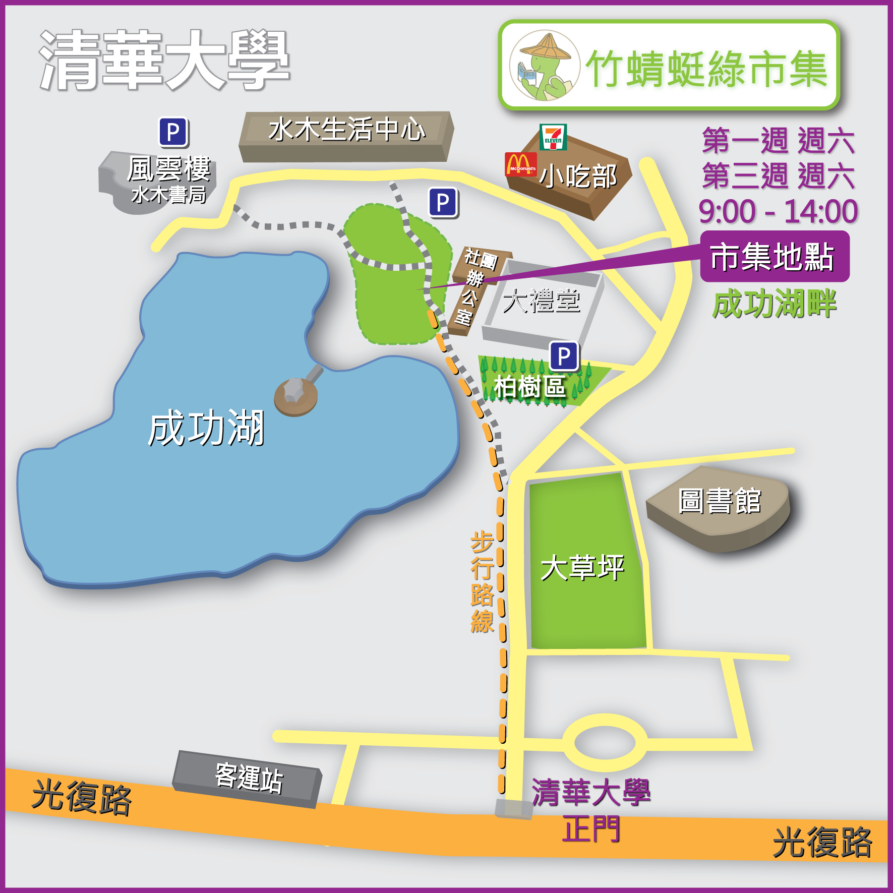

一、自行開車：
一高在新竹交流道（95A）往光復路122縣道新竹市區方向，在清大左轉，取停車票，往前行進3分鐘，左邊看到成功湖時，即可路邊停車，沿成功湖畔步道前行，就是綠市集了。
二、騎機車：（不能騎進校園內！）
騎機車朋友請在校門口登記，取得臨時停車券，將停車券貼在儀表板上，停在清大規定的機車格內，再走路6分鐘到綠市集。（注意不能騎進校園，以免受罰）
三、大眾系統：
1. 高鐵：新竹站下車，搭182路新竹公車，在清華大學站下車。
2. 火車：新竹站下車，搭1路新竹公車，在清華大學站下車。
3. 國道客運：三重或國光客運等在清華大學站下車。
進入清大正門後，沿著馬路邊的人行步道直走（右側為大草坪）約4分鐘，左側會看到成功湖，再沿路成功湖畔的步道直行約3分鐘，就是綠市集了！